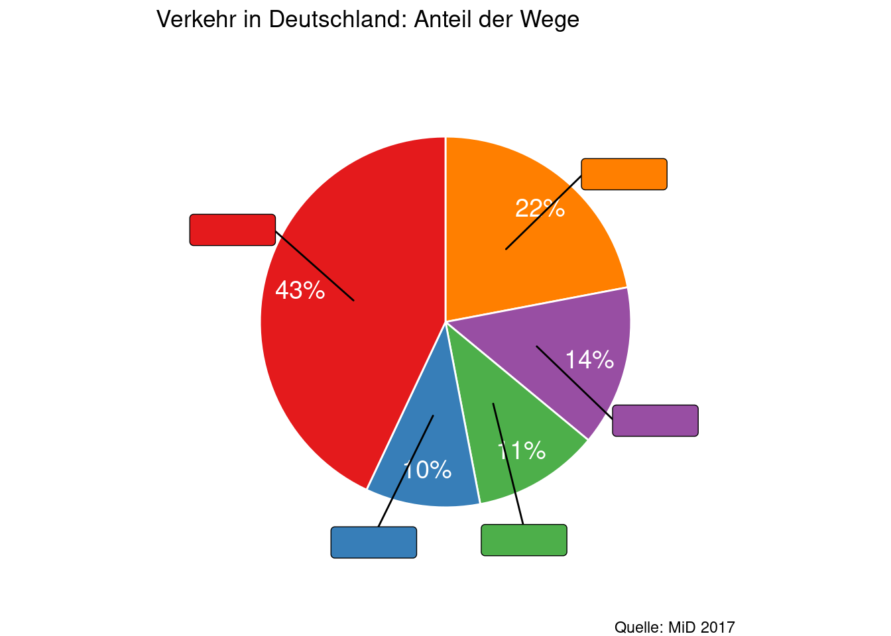
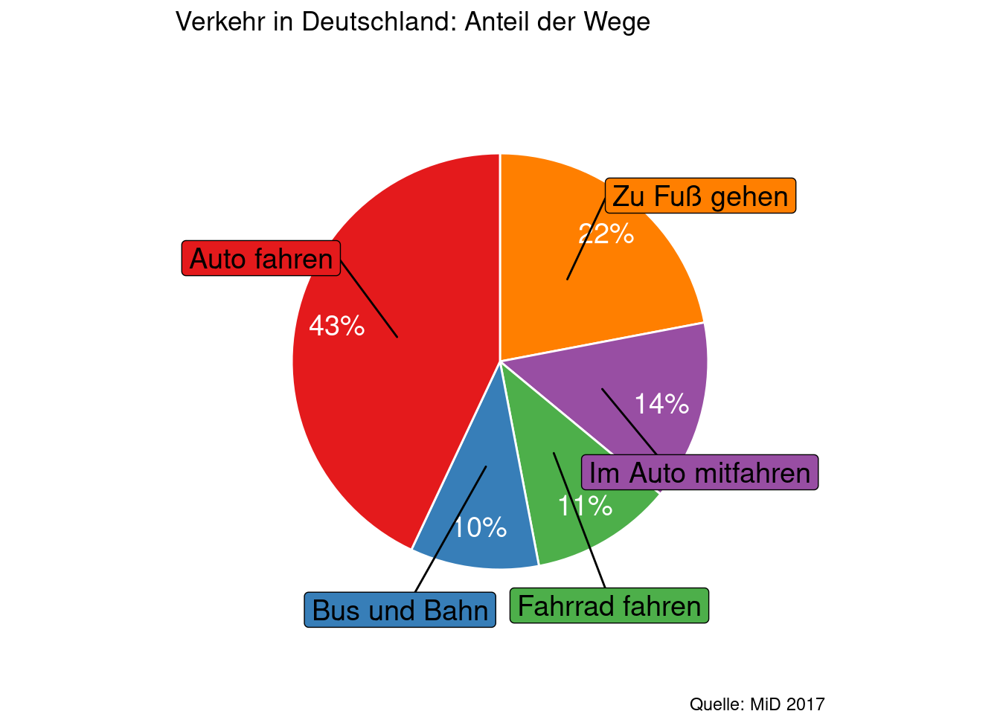

6 Eine Reise durch Deutschland planen
| Themen | Verkehrs- und Reisemöglichkeiten in Deutschland |
| Lernziele | Sie kennen Reisemöglichkeiten und können über Vor- und Nachteile diskutieren. Sie sind in der Lage, eine Reise durch Deutschland zu organisieren. |
Planen Sie eine Städtereise durch Deutschland in kleinen Gruppen. Besuchen Sie alle Städte, die Sie letzte Woche kennengelernt haben (Berlin, München, Leipzig, Hamburg und Köln). Suchen Sie online nach Reisemöglichkeiten und machen Sie einen detaillierten Reiseplan. Ihre Reise beginnt am 01. April 2023 und dauert zwei Wochen. Versuchen Sie entweder möglichst billig (Gesamtpreis für Transport) oder möglichst schnell (Gesamtzeit on the road) zu reisen.
Wie können Sie überhaupt durch Deutschland reisen? Am besten machen Sie es wie die Deutschen. Aber wie machen es die Deutschen?
Vermuten Sie: Wie häufig benutzen die Deutschen verschiedene Verkehrsmittel?
Auto fahren – Bus oder Bahn nehmen – Zu Fuß gehen – Im Auto mitfahren – Fahrrad fahren

Antwort
Das Auto ist für viele Deutsche mehr als ein Transportmittel. Sie lieben ihr Auto. Schnelles Fahren im eigenen Auto bedeutet für sie: Freiheit! Viele andere Deutsche wünschen sich dagegen ein allgemeine Begrenzung der Geschwindigkeit auf Autobahnen (Tempolimit). Schauen Sie das Video an. Welche Gründe werden für, welche gegen ein Tempolimit angeführt?
Was meinen Sie? Sollte ein Tempolimit eingeführt werden? Wie ist das in China? Teilen Sie Ihre Meinung im Plenum.
Oder Sie fahren mit dem Bus oder mit der Bahn. Viele Deutsche sind unzufrieden mit der Deutschen Bahn und machen gern Witze:
Läuft dein Leben stets nach Plan, fährst du selten Deutsche Bahn.
Die Deutsche Bahn hat eigentlich nur vier Probleme: Frühling, Sommer, Herbst und Winter.
Seit ein paar Jahren sind auch Fernbusse (Busfahren zwischen Städten) in Deutschland möglich. Bus und Bahn sind Alternativen für alle, die kein eigenes Auto haben, z.B. für Studierende.
Im folgenden Video vergleichen drei Studierende Bus und Bahn miteinander. Schauen Sie das Video und bearbeiten Sie dabei das Arbeitsblatt.
Welches Verkehrsmittel bevorzugen Sie: Bus oder Bahn? Und wieso? Teilen Sie Ihre Meinung im Plenum.
Planen Sie jetzt Ihre Reise in der Gruppe. Ich stelle Ihnen einige nützliche Webseiten vor.
https://www.check24.de/mietwagen/: Mietwagen
https://www.mitfahren.de/: Verschiedene Reisemöglichkeiten
https://www.blablacar.de/: Mitfahrgelegenheiten (im Auto mitfahren)
https://www.flixbus.com/: Fernbusse
https://www.bahn.de/p/view/index.shtml: Deutsche Bahn
https://www.billigflieger.de/: Mit dem Flugzeug fliegen
Vergleichen Sie jetzt Ihre Reisepläne miteinander. Wer hat den billigsten, wer den schnellsten Reiseplan? Finden Sie jemanden, mit dem Sie sich in einer Stadt treffen können.
Denken Sie noch einmal an die heutige Stunde. Was haben Sie sich am besten gemerkt? Formulieren Sie einen Satz.
- Lesen Sie in Tatsachen über Deutschland die Seiten 166-169 über beliebte Reiseziele in Deutschland.
- Suchen Sie auf https://www.hostelworld.com/ oder auf https://www.booking.com/ ein cooles Hostel für Ihren Aufenthalt in Berlin. Schicken Sie den Namen und ein Foto des Hostels vor der nächsten Stunde in die Wechat-Gruppe.